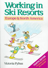

Great Ski Bum Jobs
By Steve Hoenisch
Copyright 1996-2008 www.Criticism.Com
This article was published in the October 1993 issue of
Snow Country magazine.
1 Introduction

Here’s a list of eleven great jobs that are reasonably obtainable for the well-prepared, well-seasoned or enterprising ski bum. Reasonably obtainable, however, means that the list ignores such great but scarce or specialized jobs as full-time freestyle coach, snowboard operations coordinator and helicopter skiing guide.2 Live Ski Reporter, Killington
Reporters ski Killington’s terrain and then staff the resort’s 900 number–the Live Ski Connection–answering skiers’ questions about the best runs for their ability level and where the best conditions can be found.
3 Snowboard Patrol, Snowbird
These patrollers board all day while making sure their single-planking comrades are ripping with a conscience. But you’d probably have to work at the ’Bird for at least a season or two to land one of these newly formed, coveted jobs.
4 Snowmaker, Sunday River
 Some hate it,
others love it. If you don’t like hard work, snowmaking won’t strike you
as a great job. But those who don’t mind physical work will reap this
job’s fine rewards: independence, a lot of ski time, an abundance of
early season work and plenty of miles spent riding snowmobiles. Sunday
River has three shifts for its 50 snowmakers, day, night and swing. Of
course, snowmaking jobs, like many others, are available at various
resorts and are not all that hard to get. Last winter, I landed one at
Park City, Utah, with a single phone call.
Some hate it,
others love it. If you don’t like hard work, snowmaking won’t strike you
as a great job. But those who don’t mind physical work will reap this
job’s fine rewards: independence, a lot of ski time, an abundance of
early season work and plenty of miles spent riding snowmobiles. Sunday
River has three shifts for its 50 snowmakers, day, night and swing. Of
course, snowmaking jobs, like many others, are available at various
resorts and are not all that hard to get. Last winter, I landed one at
Park City, Utah, with a single phone call.
5 Ski Instructor, Deer Valley or Park City
The town of Park City is rife with rumors of ski instructors being tipped very generously–word has it one instructor received a new four-wheel-drive vehicle after teaching a client for a season. Solid skiers with the potential to teach well may obtain ski instructor jobs at Deer Valley or Park City Ski Area by going through the ski schools’ clinics, both of which are usually held in November. Although the job doesn’t pay well the first year, good money and rewarding times await those willing to stick around.
6 Ski Patrol, Squaw Valley
What better job than
 throwing bombs over
the edge of the Palisades and then skiing down after a storm dumped two
feet of Sierra powder. The job has special requirements, such as EMT or
advanced life-saving certification, but the positions are obtainable for
the persistent, especially if you have experience.
throwing bombs over
the edge of the Palisades and then skiing down after a storm dumped two
feet of Sierra powder. The job has special requirements, such as EMT or
advanced life-saving certification, but the positions are obtainable for
the persistent, especially if you have experience.
7 Lift Operator, Timberline Lodge, Mt. Hood
OK, so lift operator isn’t the best job in ski country. But what if it offered the possibility of year-round employment, year-round skiing and plenty of ski time. Some Timberline lifties work night-skiing shifts during the winter so they can ski days, but if you have to work days, you can always ski nights. And the Cascades deliver a season-end bonus: killer backcountry skiing in spring and summer.
8 Night Crew, Mammoth Mountain
There’s about 50 positions available at Mammoth Mountain performing janitorial duties from 4 or 5 pm till midnight, giving night crew workers all day–everyday–for skiing.
9 Children’s Instructor, Crested Butte
This ski area seeks skiers who have an understanding
of children to teach
them how to ski. The job does not require certification; Crested Butte
provides training. A great job in a great place for skiers who like
working with kids.
children to teach
them how to ski. The job does not require certification; Crested Butte
provides training. A great job in a great place for skiers who like
working with kids.
10 On-Mountain Restaurant Worker, Alta
Food service jobs at the independently owned Watson Cafe come with a built-in perk: You can live on the mountain, giving you an advantage on getting first tracks after the storms that dump more than 400 inches annually at Alta. Watson Cafe–formerly called Watson Shelter–hires 32 people, 16 of whom live on the mountain, to work as waiters, waitresses, bussers, cooks, dishwashers and food servers. However, if you want one of these jobs, which include a ski pass, you’ll need to apply early.
11 Skier Services, Vail
Aspiring flacks will be attracted to this on-the-mountain public
relations job in which the workers wear ski clothes instead of dress
suits. The position entails answering questions for skiers, helping set
up for special events and helping the ski patrol. Vail, which has a
Skier Services staff of 30, usually hires several new people for the job
each year.
12 Waitress or Waiter, Just About Anywhere
For many ski bums, waiting tables nights at a ski resort or town epitomizes the ultimate job. Having just quit their real jobs to work at a resort for a season, many skiers imagine themselves as waiters or waitresses during their preseason daydreams. And for good reason: What ski bum could ask for more than good tips, free food at night and days free for skiing.
13 More Information
<img src=“../images/docblue.gif align=”left” /> A Guide to Ski Resort Jobs